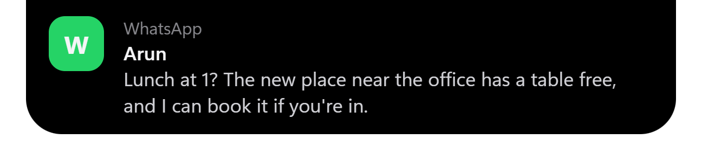
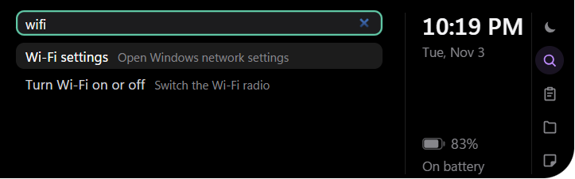
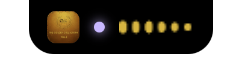

Music
Your song, at the top of the screen.
Spotify or any player that uses Windows media controls. Album art sets the accent colour, a live wave follows the beat, and you can play, skip, seek, like and scroll for volume.
The collection
Islet puts 10 everyday things in a notch at the top of your screen. Open it when you need it, and it shrinks out of the way when you don't.
Music
Spotify or any player that uses Windows media controls. Album art sets the accent colour, a live wave follows the beat, and you can play, skip, seek, like and scroll for volume.
Volume HUD
Change the volume, mute or brightness and the notch shows a slim bar instead of the big Windows overlay.

Claude Code and Codex
Sessions from both agents in one column: working, needs you, or done, with their last three actions. Allow or deny Claude permission requests right from the notch.

Pop-ups
Windows notifications drop out of the notch with the real app logo and the full message. Do Not Disturb can follow a schedule or your focus timer.

Search
Apps, files and folders, Wi-Fi, Bluetooth, clipboard and notes from one box. The arrow keys move, Enter opens.
Clipboard
The last 20 texts you copied, searchable, with pins for the ones you keep coming back to. Kept in memory only.
Dashboard
Wi-Fi, Bluetooth, airplane mode, energy saver and live captions as tiles, brightness and volume sliders, and a dock to every tool.
Ship landing changelog
Buy milk
Call Asha back
Notes and shelf
Quick notes that save as you type, and a file shelf that holds files until you drag them out somewhere else.

Pet cat
It dances to music, works during focus, naps when things are quiet, gets sick on a low battery and says hello by name.
Battery and timer
A black-hole animation when the charger goes in, Pomodoro and stopwatch, weather without an API key, and your next meeting with a Join button.